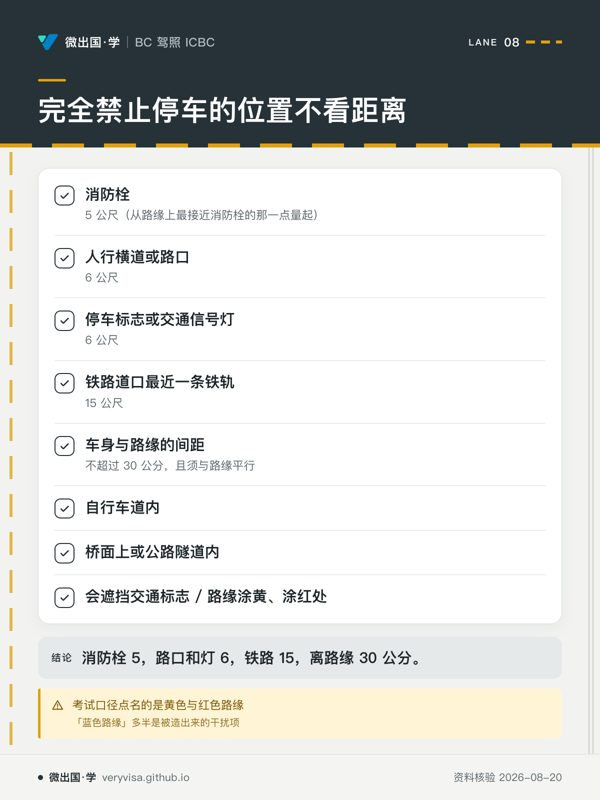

这一块是全卷数字最密集的部分：默认限速、跟车秒数、泊车距离、坡道停车的方向。数字题在整份卷子里其实不到一成，但它们有个特点——要么全对，要么全错，不存在「大概记得」。
好在这些数字几乎都能从背后的道理推出来，不必硬背。这一篇的写法就是：先给数字，再给它为什么是这个数。
一、原理与设计逻辑
限速是天花板，不是目标
这是整块内容的总纲，也决定了另外一整类题的答案：标志上的数值，是「理想条件下」允许的最高速度。
由它直接推出两条：
- 永远不允许为了跟上车流而超速。「大家都开这么快」不构成抗辩。
- 条件变差时，低于限速行驶才是守法——因为另有一条独立义务：按当时条件安全行驶。速度相对于条件过快是 Motor Vehicle Act s.144(1)(c) 下的独立违规，可以单独开罚单，哪怕你没超过牌面数值。
反向也有边界：无必要地开得过慢同样会被评估。ICBC 的路考说明里明确写着，低风险场合行驶过慢也要扣分。
为什么跟车用「秒」不用「公尺」
因为秒数会自动随速度缩放。
同样是 2 秒：在 50 km/h 是约 28 公尺，在 100 km/h 是约 56 公尺——正好对应变长的制动距离。用公尺就得每次换算，用秒数则一个规则走遍所有速度。
而且秒数当场就能量：前车尾部经过某个固定物（路牌、标线），开始数「一千零一、一千零二」，数完你才到达同一点，就够 2 秒。
泊车距离在保护什么

那几个看似随意的数字，各自守着一样东西：
| 距离 | 守的是什么 |
|---|---|
| 消防栓 5 公尺 | 消防车要能停靠并接上水带 |
| 人行横道与路口 6 公尺 | 视线——停太近，横过马路的人会被你的车挡住，双向都看不见对方 |
| 停车标志与信号灯 6 公尺 | 后车要看得见那块牌、那盏灯 |
| 铁路道口 15 公尺 | 火车车厢会外伸出轨道，且道口需要疏散空间 |
| 离路缘 30 公分以内 | 不侵占车道，也不让开门的乘客暴露在车流中 |
记住它守什么，比记住数字更牢，而且能在选项之间做判断：一个「消防栓 1 公尺」的选项，光看就知道消防车根本停不下。
坡道停车：只有一个问题要问
不要背方向。问自己一句：「万一它开始滑，我希望它滑去哪？」
- 上坡、有路缘：车会向后滑 → 前轮打左（转离路缘），轮胎侧面就会抵住路缘卡死；
- 下坡（有无路缘皆同）：车会向前滑 → 前轮打右，直接顶上路缘；
- 无路缘：没有东西可挡 → 一律打右，让车滑向路肩而不是车道。
结论只有一句：只有「上坡＋有路缘」打左，其余一律打右。
二、2026 现行实务
默认限速：三个数字
| 场景 | 默认限速 | 法源 |
|---|---|---|
| 市区内 | 50 km/h | Motor Vehicle Act s.146(1) |
| 市区外 | 80 km/h | Motor Vehicle Act s.146(1) |
| 市区内宽度不超过 8 公尺的小巷 | 20 km/h | Motor Vehicle Act s.146(8) |
| 学校区 / 游乐场区（有牌时） | 30 km/h | Motor Vehicle Act s.147 |
「默认」的意思是没有牌子时适用。有牌子就照牌子——市政府可以依附例把某条路整体调成别的数值。
小巷那个 20 常被漏掉。理由很实在：小巷没有人行道，行人、垃圾桶、倒车出库的车共用同一片路面，两侧围栏与车库门造成大量视线死角。20 km/h 大致就是「看到东西还刹得住」的速度。
跟车距离：三档
| 条件 | 秒数 |
|---|---|
| 天气与路面良好 | 2 秒 |
| 高速路段；跟随大型车辆或摩托车 | 3 秒 |
| 恶劣天气、路面不平或湿滑 | 4 秒 |
跟大车留 3 秒是因为它挡住你的前方视野；跟摩托车留 3 秒是因为它能停得比你更快——这一条方向常被记反。
减速让行（Slow Down, Move Over）
路边停着亮闪灯的作业车辆时，须减速，门槛按路段限速切分：
| 路段限速 | 通过时最高车速 |
|---|---|
| 80 km/h 及以上 | 70 km/h |
| 低于 80 km/h | 40 km/h |
多车道路上还有第二个动作：在安全前提下并到远离的车道。
受保护的车辆清单比多数人以为的宽得多：警察、消防、救护、拖车、公路养护、公用事业、商用车安全检查人员、土地测量员、动物管制、垃圾收集及其他路边作业人员。
罚则：$173 罚单 ＋ 3 个记分点。
例外：在有中央分隔带的分道公路上，从对向驶来时不适用。
泊车：距离表与禁停清单
必须留出的距离
| 位置 | 最小距离 |
|---|---|
| 消防栓 | 5 公尺（从路缘上最接近消防栓的那一点量起） |
| 人行横道或路口 | 6 公尺 |
| 停车标志或交通信号灯 | 6 公尺 |
| 铁路道口最近一条铁轨 | 15 公尺 |
| 车身与路缘的间距 | 不超过 30 公分（约一英尺），且须与路缘平行 |
记法：消防栓 5，路口和灯 6，铁路 15，离路缘 30 公分。
完全禁止停车的位置（不看距离）
- 人行道或绿化带上
- 任何车道、后巷或路口的进出口前
- 路口之内（除非有标志允许）
- 自行车道内
- 桥面上或公路隧道内
- 会遮挡交通标志的位置
- 有禁停标志处，或路缘涂黄、涂红处
- 无残疾人泊车许可证、或车上没有残障人士时占用无障碍车位
注意考试口径点名的是黄色与红色路缘。卷面上出现「蓝色路缘」这类选项时，它多半是被造出来的干扰项。
坡道停车

上图三格：上坡有路缘时前轮打左（转离路缘，溜车时轮胎抵住路缘）；上坡无路缘时前轮打右；下坡无论有无路缘，前轮都打右。
| 情形 | 前轮方向 |
|---|---|
| 上坡 · 有路缘 | 向左（转离路缘） |
| 上坡 · 无路缘 | 向右 |
| 下坡 · 有无路缘皆同 | 向右 |
配套动作要做全：拉手刹；自动挡挂 P；手动挡下坡挂倒挡、上坡或平地挂一挡。
掉头禁区
- 会妨碍其他车辆时
- 在弯道上
- 在坡顶或其附近——判据写得很具体：其他车在 150 公尺内看不到你
- 有禁止掉头标志处
- 设有信号灯的路口
- 商业区内，除非是没有信号灯的路口
- 市政附例另行禁止之处
共同点仍然是那一条：别人能不能提前看到你。 掉头是常规动作里横切车道最多、耗时最长的一个，对视距要求最高。
恶劣天气与失控
桥梁与高架路面比普通路面更早结冰。 原因是热传导：普通路面下方的地面是一块巨大的蓄热体，会持续从下方供热；桥面下方是空气，上下两面同时散热。结果是气温刚跌破冰点时，桥面已经结冰而两端的路面还是湿的——从有抓地力直接进入无抓地力，且往往就在弯道或强侧风路段。
黑冰（black ice）是路面积水冻成的透明薄冰，因为透光看得见下面的沥青，看起来只像「路面发亮」。判据是路面看着湿，却没有水花溅起。
水面滑行（hydroplaning）的三大因素是车速、水深、胎纹深度。车速能当场降，水深看运气，胎纹是开车之前就已经决定好的——所以它是唯一能提前控制的那一项。发生时：松油门、方向保持直、不要刹车。
长下坡不要挂空挡。 这既不合法也不安全：丢掉发动机制动后，全部动能只能靠刹车片吸收，会导致刹车热衰退——刹车片与刹车油过热后制动力急剧下降，而发现踩不住时往往已在坡的中段、车速最高处。正确做法是提前降到低挡，让引擎分担减速，刹车只做阶段性修正。
跟随执行任务的消防车至少 150 公尺——这是少数用绝对距离而非秒数表达的规定，因为它的目的不是防追尾，而是不要挡住消防作业面。
三、现实案例
场景一：雨夜的高速，按牌面 100 km/h 行驶。 牌面没超，但可能仍然违规——「速度相对于条件过快」是独立的违规条目。判据是能见度与路面附着力，不是牌子。
场景二：路边找车位，看到消防栓旁边正好空着一格。 5 公尺是从路缘上最接近消防栓的那一点量起，不是从消防栓本体到车头。这个量法差别不大，但拖车公司量的是前者。
场景三：温哥华的坡道停车。 市内多陡坡，坡道停车是本地日常而非考题装饰。上坡打反方向的车，一旦手刹松脱就会一路后溜进车流。打对方向的成本是两秒钟，打错的成本是一辆车。
场景四：十一月的第一个霜冻早晨，过桥。 路面是湿的，桥面已经结冰。上桥前减速，桥上不刹车、不转向、不加速——让车滑过去，是唯一正确的处理。
场景五：路边一辆拖车亮着黄灯在拖车。 限速 90 的路段上必须减到 70，并在安全时并到远离的车道。很多人以为这条规则只管警车和救护车——拖车明确在清单内，罚则是 $173 加 3 分。
四、历史变迁
数字类内容里，有些写在法条里几十年不动，有些每年都可能调。分清哪些是哪些，比记住当下的数值更有用：
| 稳定的（写在 Motor Vehicle Act 里） | 会变的（写在法规附表或政府页面上） |
|---|---|
| 默认限速 50 / 80 / 20 | 罚款金额 |
| 学校区与游乐场区 30 及其时段 | 记分点数 |
| 泊车距离 5 / 6 / 15 公尺 | 减速让行的适用车辆清单 |
| 掉头禁区与 150 公尺判据 | 拖车与保管费 |
有确切时间线索的：
- gov.bc.ca 的减速让行页面标注最近更新于 2026-07-08；该规则的适用车辆清单已经扩展过。
- 罚款附表 BC Reg 89/97 最近一次修订为 2026-04-30（由 BC Reg 73/2026 修订）。
- 引用的 Motor Vehicle Act 条文，法规站标注现行状态为 2026-08-11。
本篇未能核实的三项，如实标出：① BC 现行最高的公路限速是多少、省内是否有路段张贴 120 km/h；② 减速让行清单具体在哪一年扩展；③ 施工区超速的法定最低罚款额——ICBC 考试口径里有一张示意牌印着「最低罚款 $196」，但那是考试口径里的图示，本篇没能确认它等于现行法定数值。这三项这里不给数字。
五、边学边测
{{quiz:drv-0201,drv-0203,drv-0214,drv-0202,drv-0206,drv-0207,drv-0205,drv-0208,drv-0210,drv-0212}}
六、核心术语双语表
| 中文 | English | 说明 |
|---|---|---|
| 限速 | Speed limit | 理想条件下的上限 |
| 速度相对条件过快 | Speed relative to conditions | 未超牌面也可能违规 |
| 跟车距离 | Following distance | 2／3／4 秒三档 |
| 两秒规则 | Two-second rule | 良好条件下的基准 |
| 减速让行 | Slow down, move over | 70／40 两档门槛 |
| 消防栓 | Fire hydrant | 须留 5 公尺 |
| 人行横道 | Crosswalk | 须留 6 公尺 |
| 路缘 | Curb | 车身须在 30 公分内 |
| 坡道停车 | Hill parking | 只有上坡有路缘打左 |
| 掉头 | U-turn | 弯道与坡顶禁止 |
| 黑冰 | Black ice | 透明薄冰，看着像湿路面 |
| 水面滑行 | Hydroplaning | 主因是胎纹磨浅 |
| 发动机制动 | Engine braking | 长下坡的正确减速方式 |
| 刹车热衰退 | Brake fade | 过热后制动力骤降 |
七、来源清单
均为 2026-08-20 核查。
- Motor Vehicle Act, RSBC 1996, c.318 s.146(1)、s.146(8)、s.147、s.189——默认限速、小巷限速、学校区与游乐场区、消防栓 5 公尺（法规站标注现行至 2026-08-11）
- ICBC《Learn to Drive Smart》第 4 章 Rules of the road——泊车距离表、禁停清单、坡道停车方向与挂挡、掉头禁区
- ICBC《Learn to Drive Smart》第 5 章 See-Think-Do——限速是理想条件下的上限、两秒规则三档、空挡滑行
- ICBC《Learn to Drive Smart》第 6 章 Sharing the road——闪灯车辆减速让行、消防车 150 公尺
- ICBC《Learn to Drive Smart》第 8、9 章——桥面结冰、黑冰、水面滑行
- gov.bc.ca《Slow down, move over》——70／40 门槛、$173 与 3 分、受保护车辆清单（页面标注更新于 2026-07-08）
- gov.bc.ca《Variable speed limits》——可变限速牌的性质与罚则
- BC Reg 89/97 Schedule 3——罚款附表（现行至 2026-08-11，最近修订 2026-04-30）
本页知识卡
不看正文也能拿到这一节的核心内容：先看导读，再看图。点图放大，左右翻页。
- 先看先看哪些行填车速、哪些行填秒数，别把两类数字混用。
- 易漏学校区或游乐场区只有有牌时才用对应值；其余默认值也会被路牌覆盖。
- 下一步去练习，把场景先分成限速题或跟车题再作答。

- 先看先盯四个记忆数字，再回到各位置核对量的是哪一段距离。
- 易漏最容易错的是测量起点，而不是数字本身；不同项目的参照物不同。
- 下一步去练习，把距离题和完全禁停题分开做。